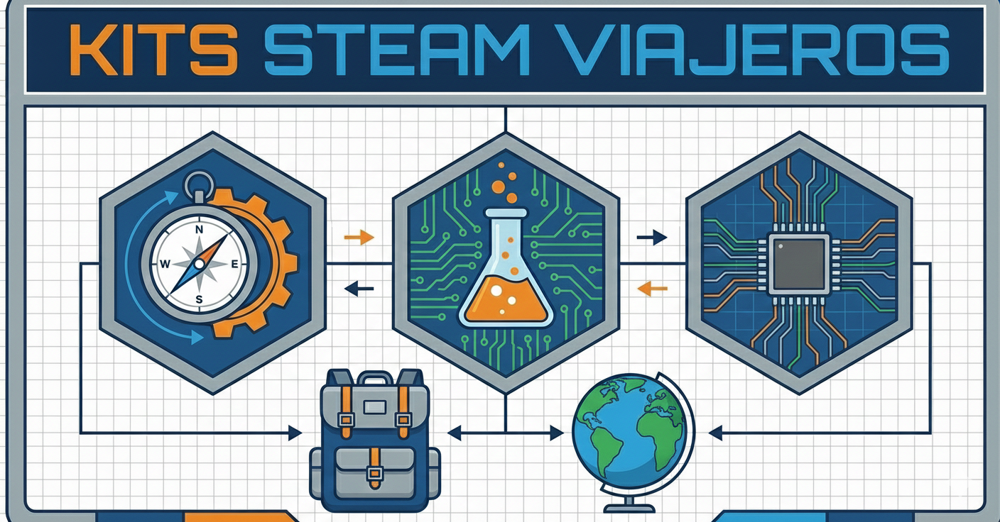
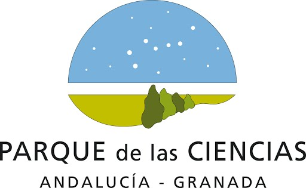
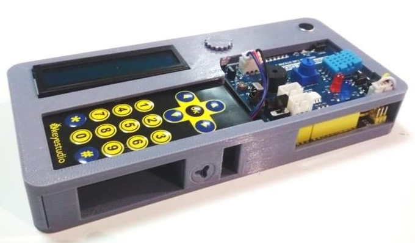

¿Que son?
Son kits didácticos que incluyen herramientas interactivas diseñadas para enseñar de forma integrada las áreas STEAM - ciencia, tecnología, ingeniería, innovación, matemáticas y arte - mediante retos.
Permiten desarrollar estas actividades fuera del parque de las Ciencias de Andalucía, haciendo que el conocimiento sea más accesible para los estudiantes.


Objetivo
Llevar el aprendizaje y la experiencia del Parque de las Ciencias de Andalucía a instituciones educativas, para que más estudiantes puedan participar en actividades y experiencias con metodología STEAM.
Contenido
Cada Kit contiene 15 cajas con placa ESP32 STEAMakers + Shield TDR-Steam con su carcasa contenedora, acompañados de la información de esta web.
